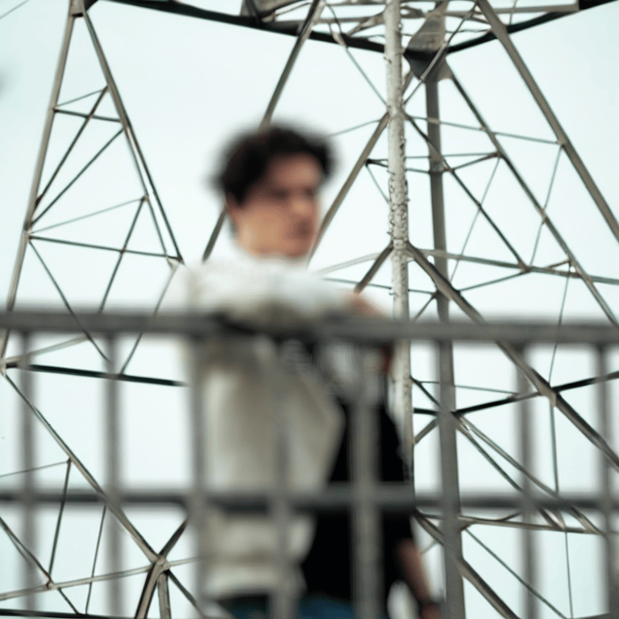
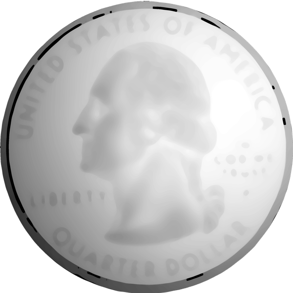

|

|
Large-Scale Light Field Synthesis from Videos Enables Geometrically Consistent Bokeh Editing
Haoming Cai,
Zhoutong Zhang,
Christopher Metzler,
Shumian Xin
European Conference on Computer Vision (ECCV), 2026
Project webpage
By synthesizing large-scale light fields from ordinary videos, we build an image bokeh dataset that enables joint focus and depth-of-field editing on any image,
producing geometrically consistent bokeh with realistic, controllable defocus.
|
|
|
Learning to Refocus with Video Diffusion Models
SaiKiran Tedla,
Zhoutong Zhang,
Xuaner Zhang,
Shumian Xin
ACM SIGGRAPH Asia, 2025
Conference Track
Project webpage
/
Paper
/
Code
Diffusion-based refocus for practical post-capture editing, generating a perceptually consistent focal stack from a single defocused image,
with emphasis on controllability, visual consistency, and workflow integration.
|
|
|
Defocus Map Estimation and Deblurring from a Single Dual-Pixel Image
Shumian Xin,
Neal Wadhwa,
Tianfan Xue,
Jonathan Barron,
Pratul Srinivasan,
Jiawen Chen,
Ioannis Gkioulekas,
Rahul Garg
IEEE International Conference on Computer Vision (ICCV), 2021
Oral Presentation
Project webpage
/
Paper
/
Code
Single-shot defocus estimation and deblurring using dual-pixel sensors, jointly estimating a defocus map and reconstructing an all-in-focus image
for robust post-capture effects under real-world capture conditions.
|
|

|
A Theory of Fermat Paths for Non-Line-of-Sight Shape Reconstruction
Shumian Xin,
Sotiris Nousias,
Kiriakos N. Kutulakos,
Aswin C. Sankaranarayanan,
Srinivasa G. Narasimhan,
Ioannis Gkioulekas
IEEE Conference on Computer Vision and Pattern Recognition (CVPR), 2019
Oral Presentation, Best Paper Award
Project webpage
/
Paper
/
Code
/
Invited talk
A theory of Fermat paths for non-line-of-sight shape reconstruction, enabling high-resolution recovery of occluded objects from indirect light transport measurements,
with potential applications in robotics and autonomy, search and rescue, and inspection in obstructed environments.
|